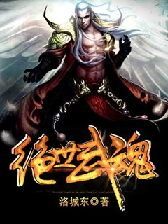
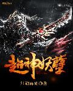

Truyện Huyền Huyễn Trung Quốc
Tuyệt thế thần trộm: Phế sài thất tiểu thư
Luân hồi nhạc viên
Vô Thượng Sát Thần
Vô Thượng Thần Đế
Hồn Đế Võ Thần
Nghịch Kiếm Cuồng Thần

Tuyệt Thế Võ Hồn

Siêu thần yêu nghiệt
Nghịch thiên ngự thú sư
Linh Võ Đế tôn
Chư Giới Tận Thế Online
Vạn cổ thần đế